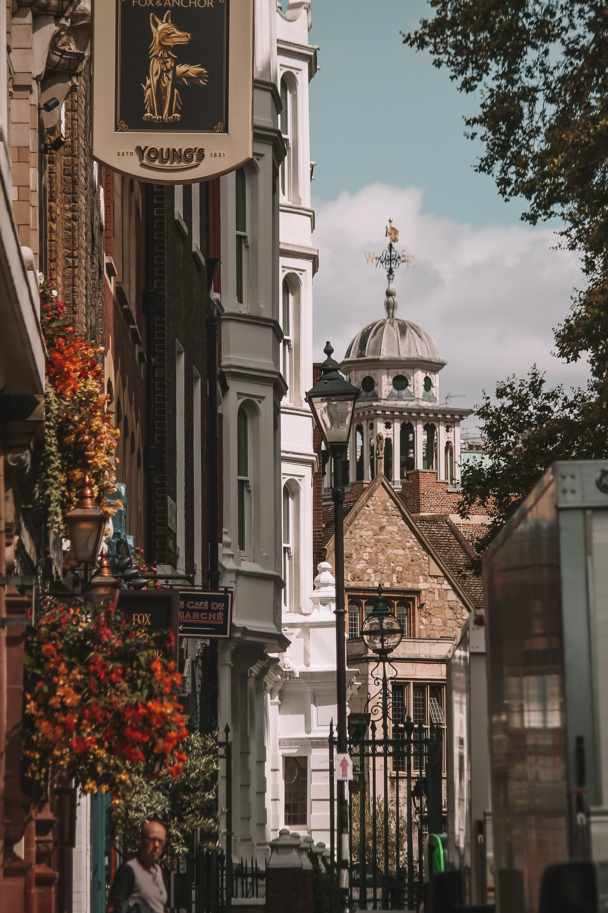
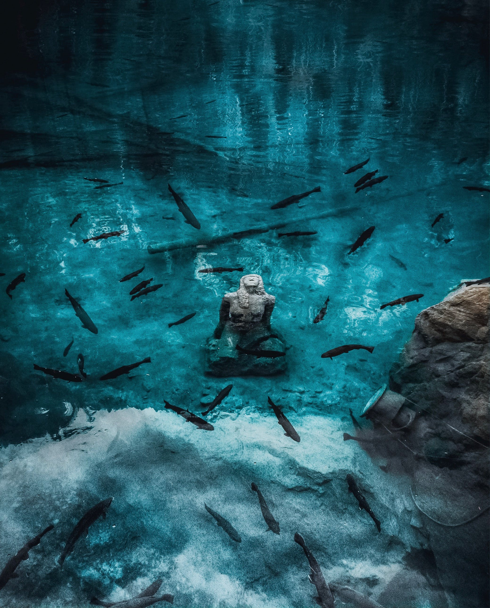
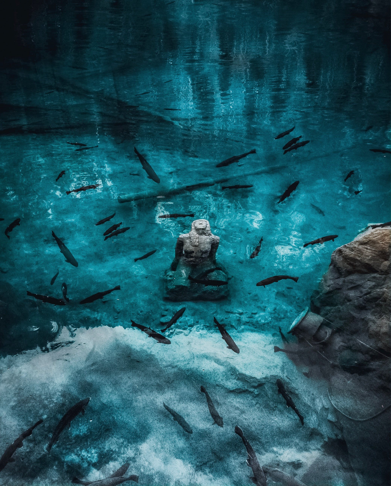
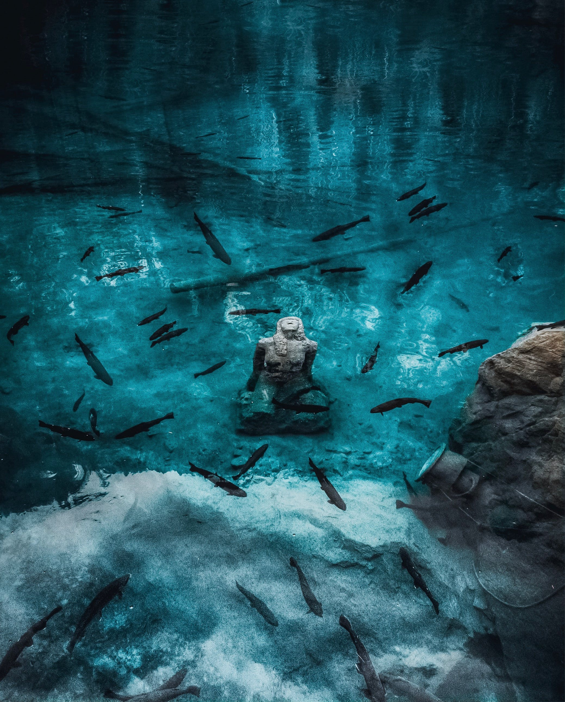
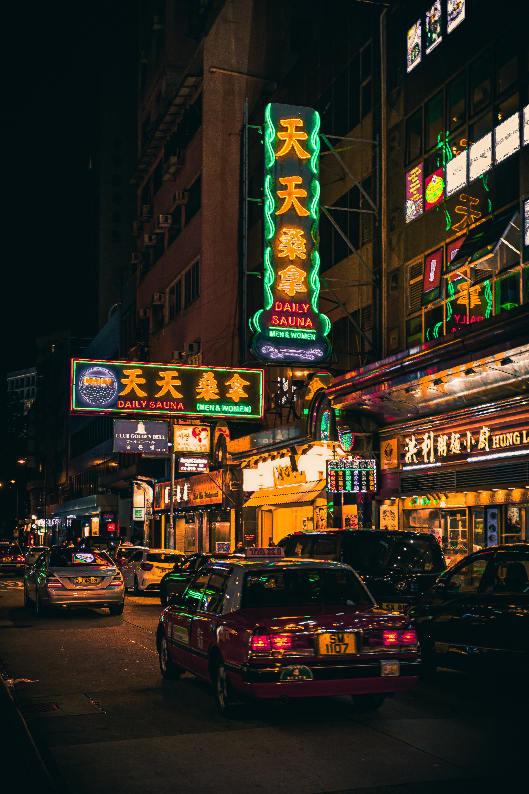
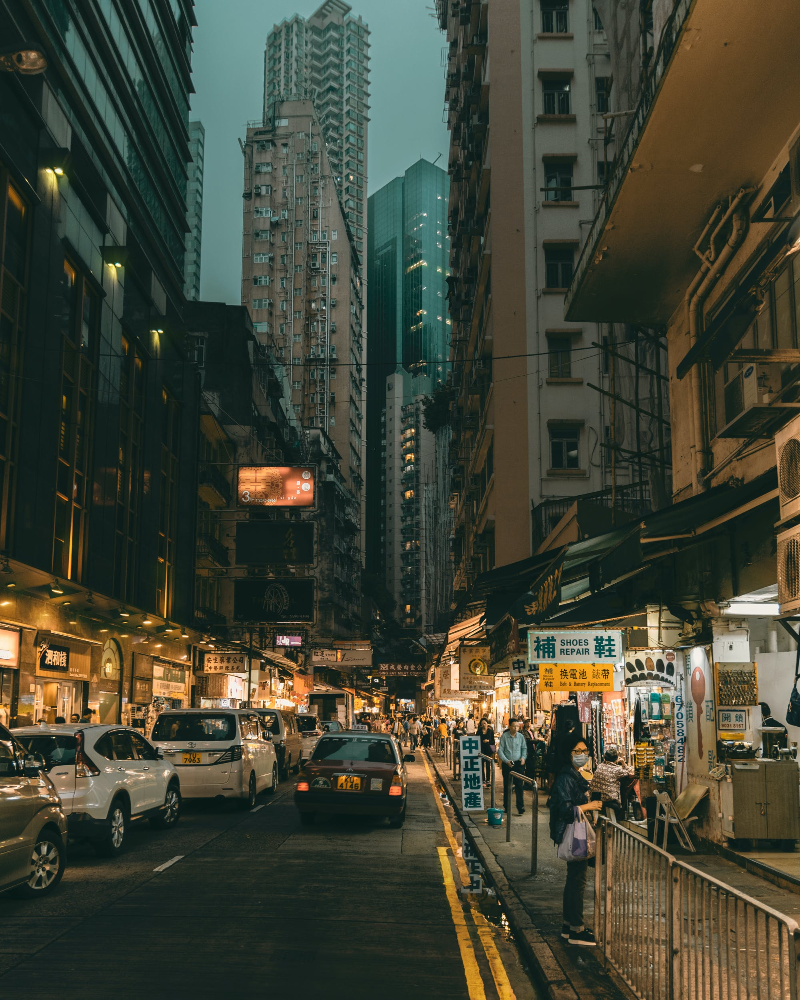

SUIÇA

 


Viajar para a França pode ser uma experiência maravilhosa, pois o país oferece uma variedade de atrações, desde a vibrante cidade de Paris até as pitorescas vilas no interior e as belas paisagens naturais.
CHINA



Ao viajar pela China, você não apenas testemunhará a grandeza de sua história, mas também sentirá a pulsação de uma nação em constante evolução. Prepare-se para se perder nas antigas tradições, sabores exóticos e paisagens deslumbrantes, pois a China aguarda para revelar seus segredos mais profundos.